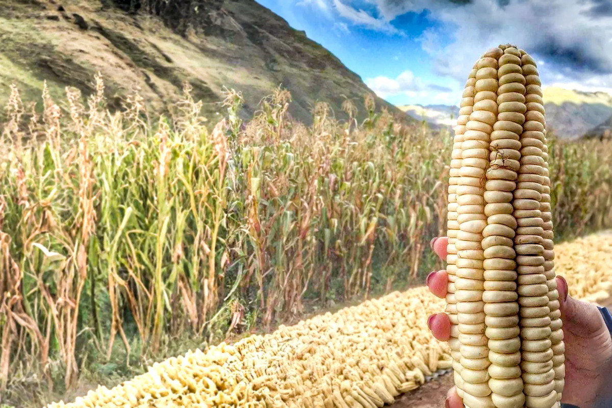
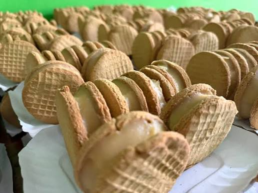
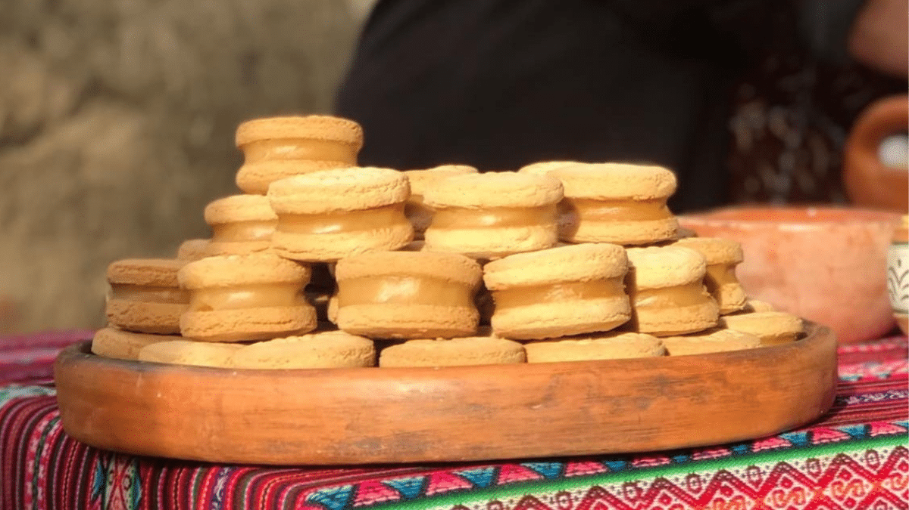
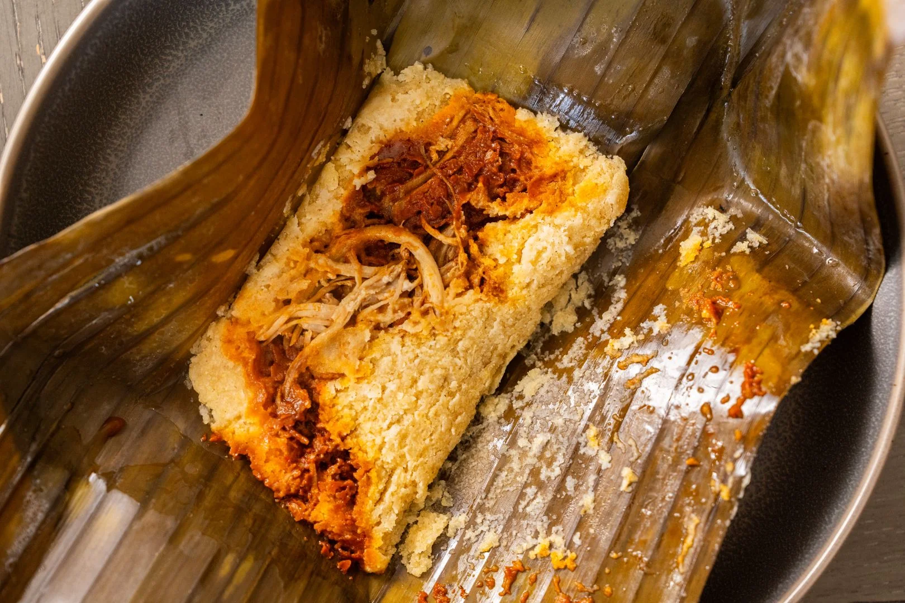
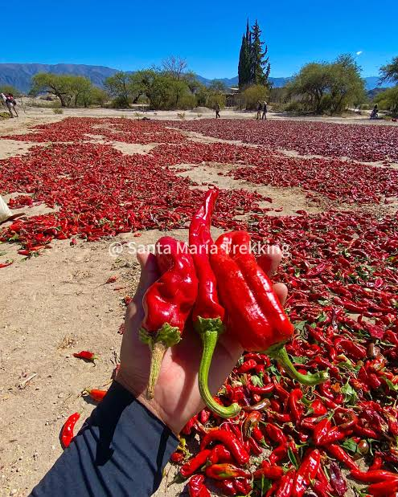
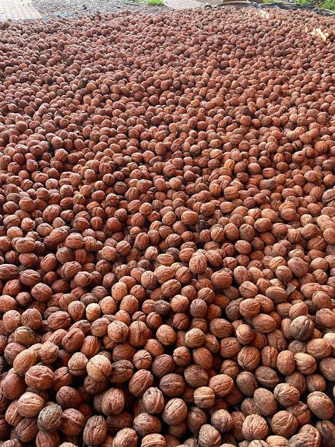
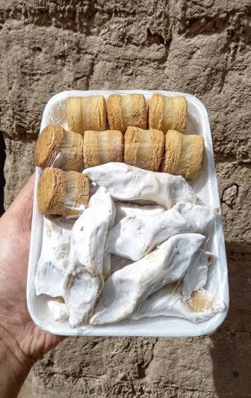
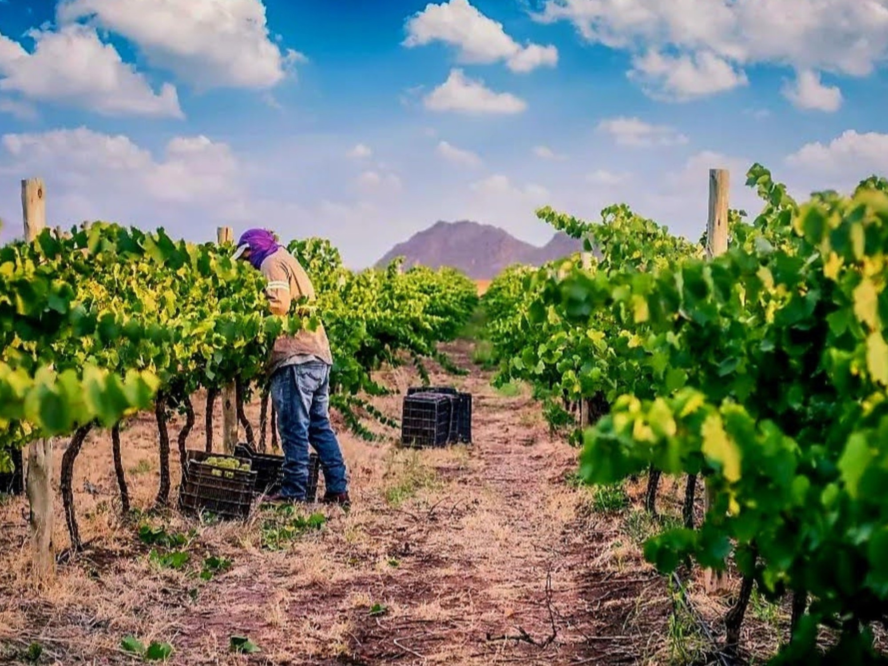
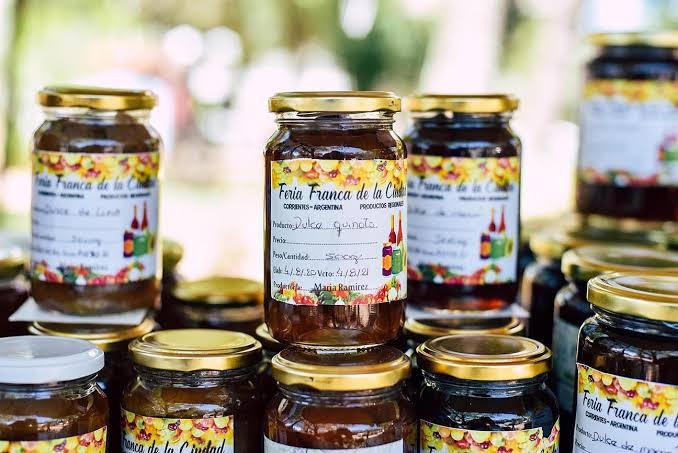

Gastronomía · Santa María
Sabores que cuentan historias
Un recorrido por los sabores y productos que acompañan la identidad gastronómica de Santa María.
Valle de Yokavil
Sabores que cuentan la historia de nuestra tierra.
Santa María tiene una identidad gastronómica construida a partir de sus productos, sus paisajes y los conocimientos transmitidos de generación en generación.
El maíz, las especias, las nueces y las preparaciones artesanales forman parte de una cocina que conserva sabores tradicionales y refleja la riqueza del Valle de Yokavil.
Descubrir su gastronomía es también conocer el trabajo de sus productores y las costumbres de una comunidad que mantiene viva su herencia culinaria.

Producto emblemático
Un sabor que representa a Santa María.
La capia es uno de los productos gastronómicos más representativos de Santa María. Este alfajor artesanal, elaborado con harina de maíz capia, conserva una receta y técnicas de preparación transmitidas entre generaciones.
Su elaboración requiere conocimientos particulares sobre la preparación de la masa, el reposo y la cocción. Cada productor mantiene sus propios saberes, convirtiendo este producto en una expresión de la identidad local.
En reconocimiento a su importancia cultural, la receta artesanal de la capia fue declarada Patrimonio Inmaterial Cultural de la Provincia de Catamarca mediante la Ley N.º 5851, sancionada en julio de 2024.


Cocina regional
Recetas que conservan nuestras raíces.
La cocina regional de Santa María reúne preparaciones vinculadas a la tradición andina y a los productos cultivados en el valle.
Entre sus sabores se encuentran el mote, los tamales y las humitas, elaboraciones en las que el maíz ocupa un lugar protagonista. También forman parte de la gastronomía local distintas masas regionales, empanadillas, gaznates y rosquetes.
Son recetas que conservan formas de preparación heredadas y que continúan presentes en las mesas familiares y en los encuentros populares.
De la tierra al encuentro
Los sabores que nacen de nuestra tierra.
La producción regional de Santa María se caracteriza por la variedad de ingredientes y productos elaborados por pequeños productores y emprendimientos familiares.
El maíz capia, el pimiento utilizado para elaborar pimentón, las especias y las nueces forman parte de esta riqueza productiva.
También se destacan los derivados de la nuez, como harinas, aceites, cremas y alfajores, junto con dulces y otras elaboraciones artesanales.
Cada producto refleja el trabajo local y el aprovechamiento de los recursos del territorio.



Paisaje y producción
Viñedos que crecen cerca del cielo.
La vitivinicultura forma parte de la historia productiva del Valle de Yokavil. Las condiciones geográficas y climáticas de la región permiten desarrollar cultivos de vid en un entorno de gran amplitud térmica y paisajes montañosos.
En Santa María, esta tradición se mantiene mediante bodegas y pequeños productores que elaboran vinos con identidad regional.
Entre las elaboraciones tradicionales se encuentran el vino patero, la mistela y otras variedades que expresan el carácter de la producción vitivinícola del valle.


Encuentros con productores
Mucho más que probar un sabor.
La gastronomía de Santa María también puede descubrirse a través de experiencias que acercan al visitante a sus productores y elaboradores.
La Ruta de la Capia permite conocer emprendimientos dedicados a la elaboración de este producto tradicional. También existen propuestas vinculadas a las especias, los productos derivados de la nuez y los vinos de altura.
Recorrer estos espacios es una oportunidad para conocer los procesos artesanales, descubrir sabores regionales y valorar el trabajo de quienes mantienen vivas las tradiciones gastronómicas del valle.